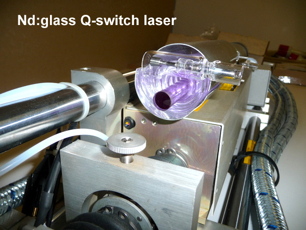
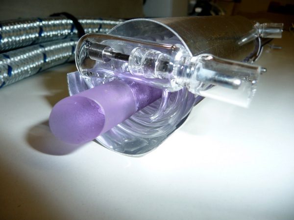
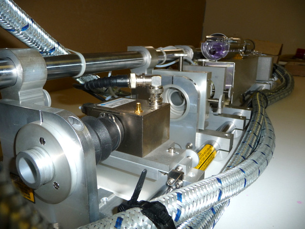
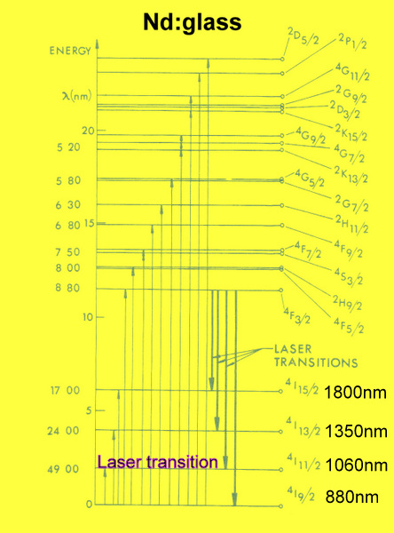
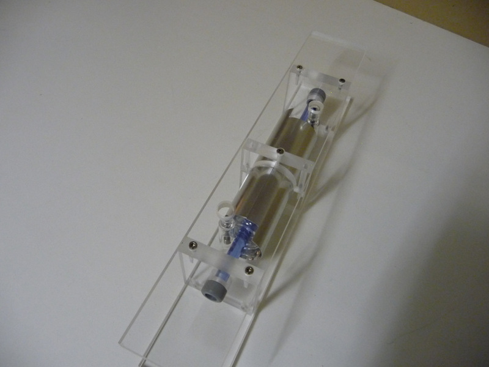
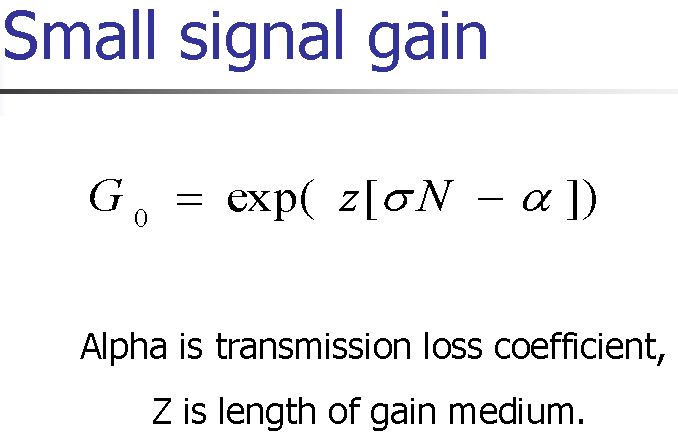
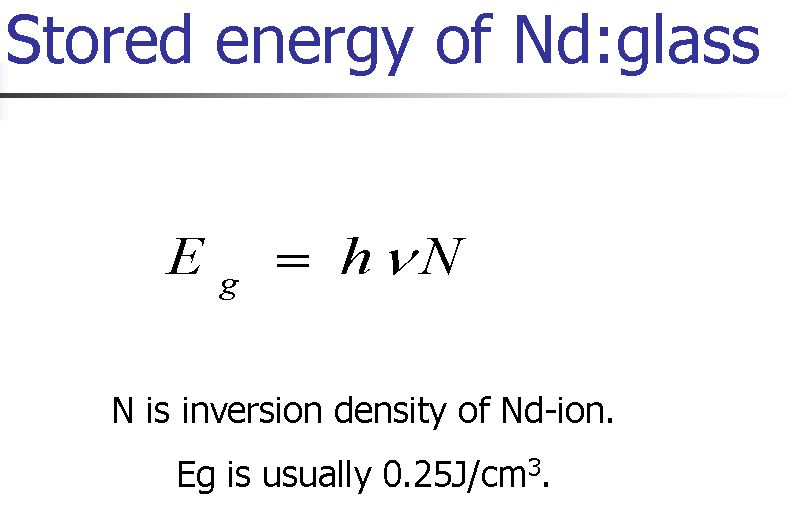
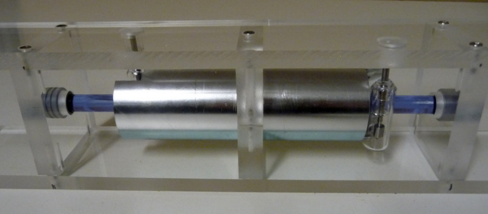

Assembly of a triggered laser equipped with a neodymium glass doped with 3.05.1020ions / cm3.
This type of laser has the particularity of extracting a great energy with pulses in the range of 10-20 nanoseconds.
Neodymium-doped glass is a four-level system like YAG: Nd. The big difference is that to get the laser threshold it must be injected much more energy because it has a spectral emission width much larger than the YAG: Nd which has the advantage of obtaining pulses more short.
The gain and energy stored in the 4F3 / 2 level is proportional to the pumping intensity.
The gain for picosecond pulses, nanosecond, microsecond is the same!
On the other hand, the maximum energy (J / cm3) that can be extracted depends on the duration of the pulse.
During the pumping phase only 4 to 5% of the Nd3 + ions are on the 4F3 / 2 energy level.
The width of the emission band for silicate glasses is 35 nm, for aluminate glasses 43 nm and for 25 nm phosphate glasses.



To understand the energy levels in the Nd3 + ion it is necessary to analyze the different transitions.
What is remarkable is that the Nd: glass system behaves both as a 4-level system and as a 3-level system!
During flash tube pumping, absorption occurs between the fundamental level 4I9 / 2 and the levels and towards 15 states of excitation. Atoms of these various excited states come populated state 4F3 / 2 from where the various laser transitions leave.
The transition 4F3 / 2 and 4I9 / 2 is a transition at 3 levels (0.88 um) a resonant line emitting and absorbing at the same time (thus loss of energy)
The transition 4F3 / 2 and 4I11 / 2 is a transition 4 levels emitting at 1.06 μm producing the laser radiation.
The transition 4F3 / 2 and 4I13 / 2 is a transition at 1.35 um the glass has a relatively high absorption which does not allow to obtain laser emission.
The transition 4F3 / 2 and 4I15 / 2 is a transition at 1.80 um the glass has a very high absorption which does not allow to obtain laser emission.
The fluorescence time 4F3 / 2 is of the order 300 to 600 μs.
The 4I11 / 2 transition in the 4I9 / 2 ground state is 200ps
The various states of the excited state transitions (15 states) in the 4F3 / 2 state occur via a radiative or multiphonon transition very rapidly





Neodymium glass type GLC7 doped with 3.05.1020 ions / cm3.
Diameter of the bar 12mm length 260mm V = 29.4cm3 Eg = 7.35J Helical flash tube type